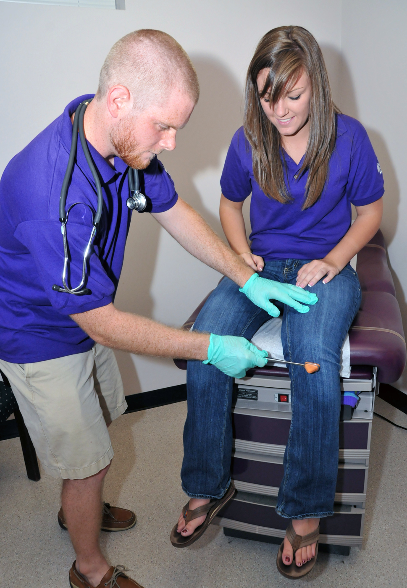

Western Carolina University is pleased to offer services to help meet your healthcare needs while you are a member of our campus community. University Health Services is conveniently located in the Bird Building on the upper half of campus, and is open Monday thru Friday from 8:00am-5:00pm.
Services are available to any university student regardless of insurance coverage.
Our goal is to provide friendly, efficient, and effective healthcare for you while you are a student, as well as help you gain confidence and knowledge in how to manage your health. Health Services is staffed by a mixture of physicians and physician extenders and nursing staff with many years of experience in college health.
Health service’s staff looks forward to helping you manage your health in the coming years that you are a Catamount and helping you equip yourself with lifelong health habits.
Before class registration can be completed, you must comply with North Carolina Immunization Requirements for university students.
UNC system students are required to have health insurance coverage. To have the school sponsored plan you must Enroll today in order to receive your insurance card in the mail by the effective date of August 1st (Fall) or January 1st (Spring). If you already have other insurance coverage, you must Waive enrollment in the school sponsored plan to avoid being billed for the health insurance premium.
You may contact us at 828-227-7640 or visit our website at studenthealth.wcu.edu.
Please follow the links below to several important pieces of information that you need to know to easily access services after you become an enrolled student:
Frequently Asked Questions Concerning University Health Services
Urgent Requirements that need to be meet for Enrollment at WCU
Health services requires you to provide two vital pieces of information upon enrollment
-
Complete Immunization Records
Each student must provide completed immunization records as required by NC State Law before attending a NC college or university.
Those requirements are listed on the health services immunization page.
Your immunizations MUST be finalized before you can complete
your class schedule.
-
Health Insurance Coverage
Each student is required to have health insurance coverage while enrolled at WCU. The premium charge for the mandatory health plan will be added to your student account as part of
tuition and fees. If you have other health insurance, you can request a waiver and have that charge removed from your student account.
Criteria for mandatory coverage are as follows:
-
Student is enrolled in >= 6 semester credit hours
-
Student pays the health fee
-
Student is in a degree seeking program
For students that meet the above criteria, the university (in accordance with UNC school system policy) provides a student insurance policy. More information about the administration of that policy, policy benefits and premium cost can be found at studenthealthins.wcu.edu
If you have other health insurance and would like to waive the mandatory UNC system health plan, please visit HOW TO WAIVE and follow the instructions on that website. After your waiver request has been verified, the premium charge will be removed from your student account.
If you do not have other health insurance coverage you must enroll in the UNC system health plan, please visit HOW TO ENROLL.
If you do not take action regarding waiver or enrollment, you will be automatically enrolled in the UNC system health plan after the waiver process has ended. Students that wait for the automatic enrollment process will have insurance coverage effective on August 1st (for Fall enrollees) and January 1st (for Spring enrollees) BUT may not receive an insurance card until mid-semester.
Return to FAQ »
What I need to know before visiting the doctor?
When visiting university health services, or any other healthcare provider, there are important pieces of information that you should know about your own medical history.
This may be your first time visiting a physician without a parent, and it is important that you know vital pieces of information about yourself and your health.
Talk to your parent before coming to school to educate yourself about your health history, and your family’s health history. It’s important to help you receive the best care possible.
Also, remember that the information shared between you and your healthcare provider is protected and confidential; if you have a medical condition of any sort it is crucial that you share that information with your doctor.
The doctor needs to know critical information to make informed decisions and provide you with an accurate diagnosis.
Critical things to know:
-
Allergies – have you ever had an allergic reaction to 1)any medication 2)any foods, 3)any environmental agents (ie… laundry detergent?)
- If you have had an allergic reaction, what happened?
- Medications - are you currently taking any prescription or over the counter medications, including vitamins or supplements?
- Know the correct name, dosage and frequency of the medication.
-
Medical conditions - do you currently have or have you had in the past any chronic health problems or any history of surgery?
- For example, do you have a history of asthma?
- Do you have or have you had cancer?
- What type of surgery have you had?
- Family History - What types of medical conditions exist in your family?
- For example, does your father have a history of high blood pressure or cardiac problems?
- Does your brother have diabetes?
The answer to these questions often help a physician in treating the patient the most effective way possible and helps avoid any potential dangers to the patients, for instance prescribing an antibiotic that you may have had an allergic reaction to in the past.
Return to FAQ »
What services are offered at University Health Services?
University Health Services offers typical services found in a primary care physician’s office or an urgent care clinic. Those services include the following:
|

|
-
General Clinic
- Well or Scheduled Appointments
- Annual Physicals
- Medication Management Appts
- Sick/Walk-In Visits
- Nurse Triage/Nurse Visits
- Non-Invasive Surgical Procedures
- IV Therapy Services
- Inhalation Therapy
- Contraceptive Counseling
- Colposcopy Procedures
-
Injection Clinic
- Immunotherapy (Allergy) Serums
- Vaccines and Immunizations
- Therapeutic Injectable Medications
-
Laboratory Services
- In-House Hematology
- On-site Rapid Diagnostics
- STI Testing
- Sickle Cell Screening
- Collection site for reference testing
-
Pharmacy Services
- In-House prescription dispensing
- Over the counter retail sales
-
Nutritional Services
- Medical Nutritional Needs
- Weight Management
- Dietary & Diabetic Counseling
- Disordered Eating
|
Return to FAQ »
When should I seek services?
Sick Vists
Sick visits are often considered urgent care appointments and are defined as a sudden onset of symptoms, waking with those symptoms or getting injured.
Health services utilizes a triage process to accommodate walk-in patient’s request for services. Each patient will be seen by an RN for evaluation of severity of symptoms. Based on that
assessment, the RN will determine the urgency in which the patient may need to see a provider and will schedule as appropriate based on health services provider's protocols.
The RN will ask you the following questions to help assess your care:
- What are your symptoms?
- How long have you experienced these symptoms?
- Have you taken any medications?
Check-ups and scheduled vists
Patients now have the ability to schedule an appointment online using the
CatHealth Patient Portal for the following:
-
routine check-ups or follow up care for ongoing management of medical conditions
- annual physicals, annual pap and gynecology exams
- medication refills and management
- follow up appointments
- health physicals or clearance to participate
- lab orders from outside providers
- medication refills
- STI testing
- illness or injury
Appointments can also be scheduled by calling 828-227-7640.
Return to FAQ »
What are my costs and how do I pay for services?
Health Services Charges
Each student’s attending WCU pays a student health fee through the tuition and fee payment process. This fee entitles the student to routine health services provided by health services
staff.
Charges that a student might incur during a visit include:
- Charges for laboratory services
- Pharmacy items dispensed in health services
- Minor treatment charges for procedures
- Supplies used for treatment (ie.. crutches)
Health services evaluates charges on a annual basis to ensure that the most affordable healthcare is available for the student.
Payment for Services
Several payment options are available for students to take care of any financial obligations at health services.
These options include:
- Cash, check, all major credit cards and medical spending account cards.
- CatCash
- Charge to the student account.
Insurance Coverage
Students do not have to be enrolled in the UNC system health plan to access University Health Services. For students enrolled in the mandatory UNC plan, UHS will submit an insurance
claim to the student health plan for reimbursement, and most charges will be covered at health services at 100%.
Currently University Health Services can only file claims to student health services.
Students that are covered under a private or other policy will be provided the necessary information to file an insurance claim with the private policy upon request.
Return to FAQ »
What should I do in case of emergency?
If you find yourself in an emergency situation and you are on the campus of WCU the student EMS service is available for your needs FREE of charge.
University Health Services maintains a Campus EMS service for our student’s safety. The campus service is licensed for BLS, or basic life support, care, and is staffed by student
workers. Campus EMS may provide transportation to either University Health Services or Harris Regional Hospital depending on the patient’s condition and the time of day of the call.
For emergencies that require an advanced level of care, WestCare EMS serves as the paramedic service for campus.
To request Campus EMS call 828-227-8911.
You can obtain more information about utilizing campus EMS or becoming part of our team by visiting Campus EMS.
Return to FAQ »
Top of Page »